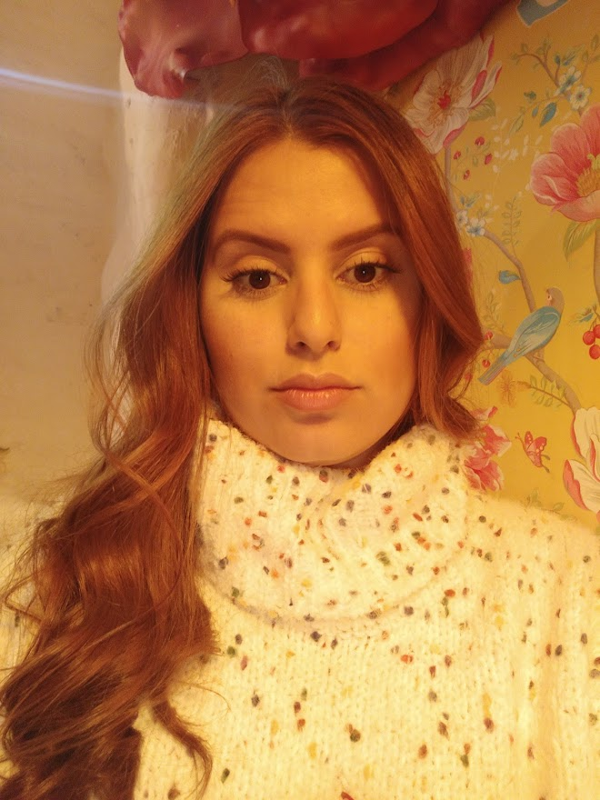

<!-- <div class="rowAbout">
  <svg id="svg" xmlns="http://www.w3.org/2000/svg" viewBox="-300 0 950 270">
    <path d="M-314,267 C105,364 400,100 812,279" fill="none" stroke="white" stroke-width="120" stroke-linecap="round" />
  </svg>

  <div class="left">
    <div class=fakeMenu>
      <div class="fakeButtons fakeClose"></div>
      <div class="fakeButtons fakeMinimize"></div>
      <div class="fakeButtons fakeZoom"></div>
    </div>
    <div class="fakeScreen">
      <p class="line1">&nbsp;&ldquo;I'm a Angular Developer.&rdquo;<span class="cursor1">_</span></p>
      <p class="line2">&nbsp;&ldquo;I'm a Front End Developer.&rdquo;<span class="cursor2">_</span></p>
      <p class="line3">&nbsp;&ldquo;Let's work together!&rdquo;&nbsp;<span class="cursor3">_</span></p>
      <p class="line4">&nbsp;><span class="cursor4">_</span></p>
    </div>
  </div>

  <div class="right">
    <div id="about">
      <div id="text">
        <h2>
          <b>
            < h1> Hello, World! < /h1>
          </b>
        </h2>
        <h5>Lisbon, <span>May 26, 2023.</span></h5>
        <h3>About Me...</h3>
        <hr>
        <h4>
          < p> Sou um pessoa curiosa e iniciante no universo da programação. Descobri minha paixão por códigos e por um
            bom chá, afinal, manter calma ajuda muito a desenvolver melhor, não é mesmo!? Sou desenvolvedora <b id="contour">Front End</b> com foco em <b id="contour">TypeScript</b>, em especial com <b id="contour">AngularJS</b>. < /p>
        </h4>
      </div>
      <div id="photo">
        
        <div id="moldura"></div>
      </div>
    </div>
  </div>
</div>
 -->


 <div class="aboutMe">
  <div class="text">

  </div>
  <div class="photo">

  </div>
</div>
